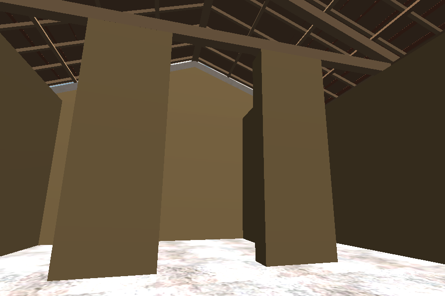

Remnants of the wall do not exist, aside from a wall socle at the northwest corner of the site. Given the mass of muddy clay and the roof terracottas, by looking at comparative scholarship it can be reasoned that above the stone socle, attached to the podium, the walls were built in mud brick. Given the imprint in the profile from the columns found on the site, it is hypothesized that the walls were approximately 4.7 meters tall, to match the height of the columns. Since the first and second phases of the temples seem to have corresponding cellas, scholars assert that the alae walls also correspond between the two structures. Therefore, the first temple’s alae walls would have terminated in antae at the front of the podium Andersen, 1998 Holloway, 1994 Hopkins, 2010 Winter, Symbols of Wealth and Power, 2009
